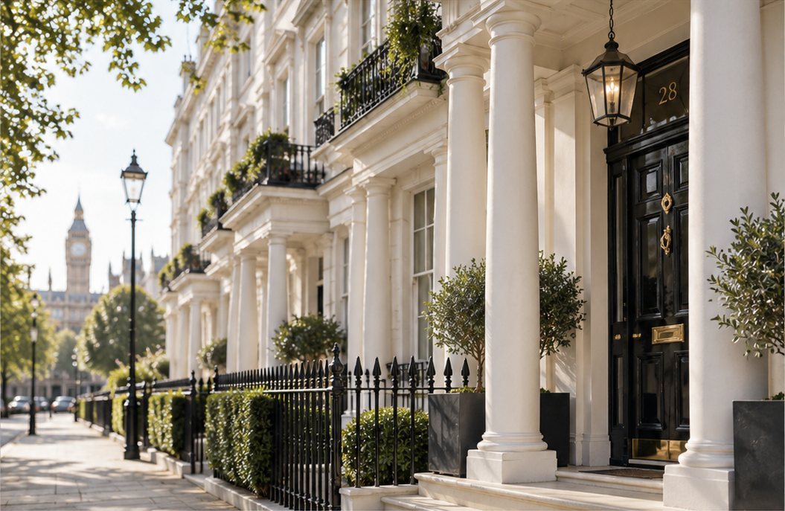
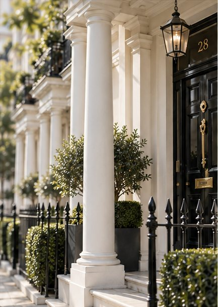

Your Brief
A private conversation about what you are looking for, why, and when. No detail is too small.

A private, by-request property service. You share your brief; I search discreetly, on and off the market, and bring you only what is genuinely right.

A more personal London.

Crownsmere Estate is not a typical estate agency. Rather than selling whatever happens to be on the books, I work from your brief, searching personally to find what is genuinely right for you.
Each client is taken on individually, and each search is shaped around their life, their timing and their priorities. You deal with me directly, from the first conversation to the day you collect the keys.
Many of London’s finest homes change hands quietly, without ever being advertised. Through a discreet network of owners, agents and advisers, I can open doors that never appear online.
Tell me what you are looking for. I search personally, on and off the market, and bring you only what fits.
A discreet, private sale to qualified buyers from my network, without the noise of a public listing.
The right home to rent, or the right tenant for your property, found quietly and personally.
Investment opportunities sourced to your brief, including those that never reach the open market.
Independent, impartial advice whenever you need a trusted second opinion.
A private, unhurried process, shaped entirely around you.
Share your briefA private conversation about what you are looking for, why, and when. No detail is too small.
I search personally, on and off the market, drawing on a discreet network of owners, agents and advisers.
You see only what genuinely fits. Every property is checked first, so your time is never wasted.
Viewings arranged around you and accompanied personally, with an honest opinion on every property.
Calm, strategic negotiation on your behalf, to secure the right property on the right terms.
I stay with you through to completion, and remain on hand long after the keys are yours.

You share the brief. I find the property.
Discretion · Expertise · Results
Not sure which neighbourhood suits you? Helping you choose is part of the search.
You deal directly with me, from the first conversation to the final signature. No call centre, no junior negotiators, no hand-offs.
Many of London’s finest homes change hands quietly. A discreet network of owners, agents and advisers opens doors that never appear online.
In-depth, neighbourhood-level knowledge across Prime and Super Prime London, built through experience and long-standing relationships.
Calm, strategic negotiation to achieve the best possible outcome, backed by objectivity and a deep understanding of the market.
The finest homes rarely need to be advertised.
You share your brief, by email or through the form on this site. We then have a private conversation about what you are looking for and why. From there, I search personally and bring you a shortlist of properties that genuinely fit.
Deliberately. Crownsmere works from your brief rather than from a list of properties to sell. Many of the homes I find are never publicly advertised, and those that are deserve to be judged against your brief, not a shop window.
A property whose owner prefers to sell or let quietly, without public advertising. These homes are reached through a discreet network of owners, agents and advisers rather than through property portals.
Yes. I can introduce your property privately to qualified buyers or tenants, without a public listing unless you would like one.
Prime and Super Prime London, including Mayfair, Belgravia, Knightsbridge, Chelsea, Kensington and Notting Hill. If your brief takes us further afield, just ask.
Please get in touch. A search can begin by telephone or video call, with regular updates until you are able to visit in person.
Completely. Your brief and your details are used only to help you, and are never shared without your permission. See the privacy notice for details.
Every brief is different, so terms are discussed openly at the outset and agreed in writing before any work begins.
Whether you are searching for a home, an investment, or a discreet buyer for your own property, every engagement begins with a private conversation.